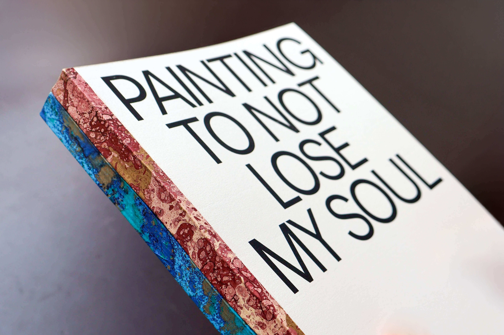
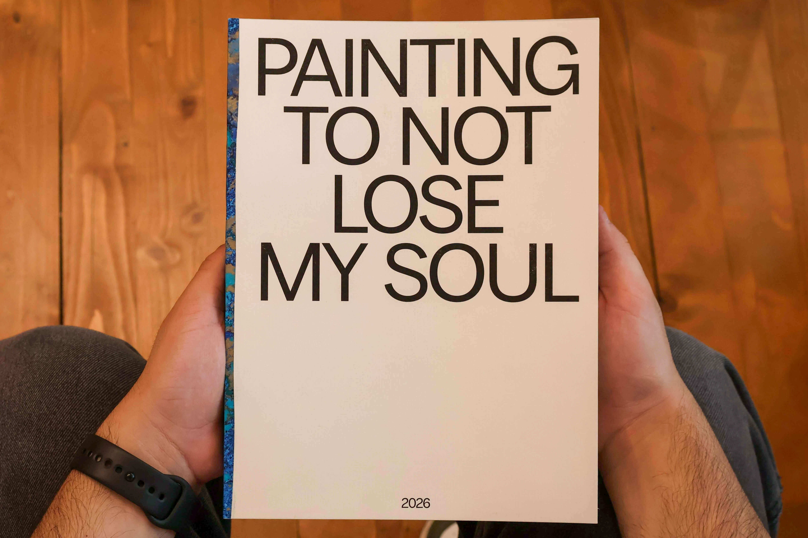
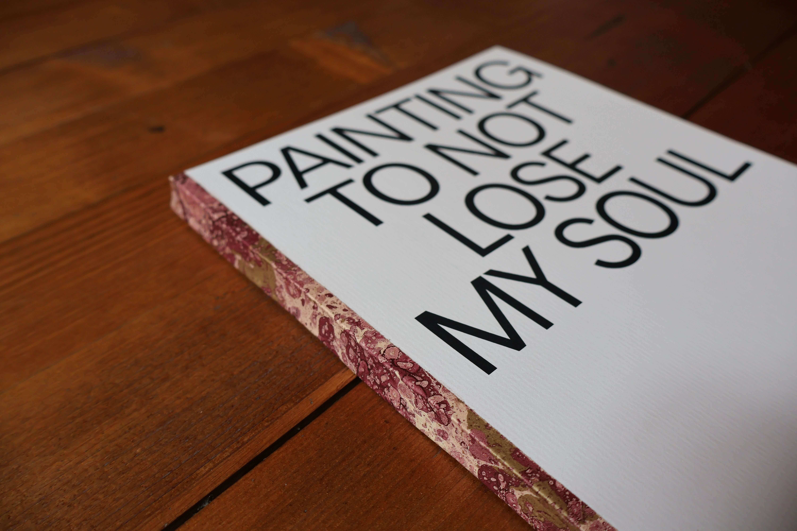
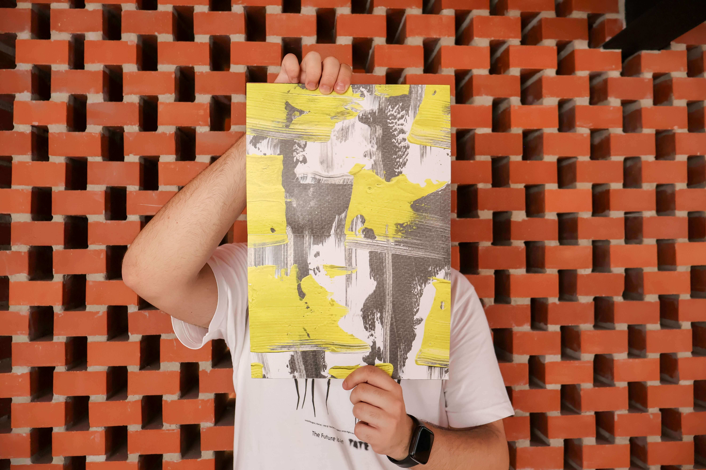
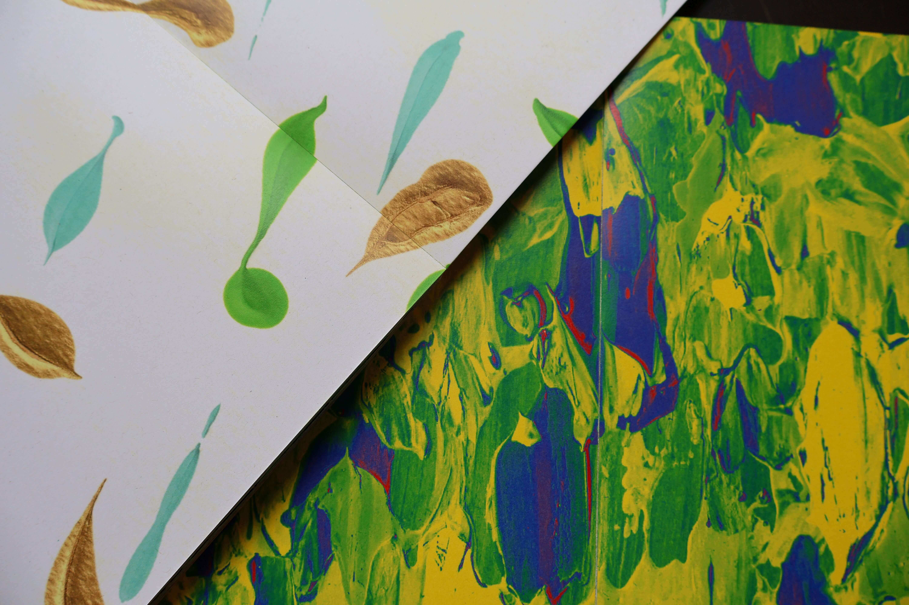
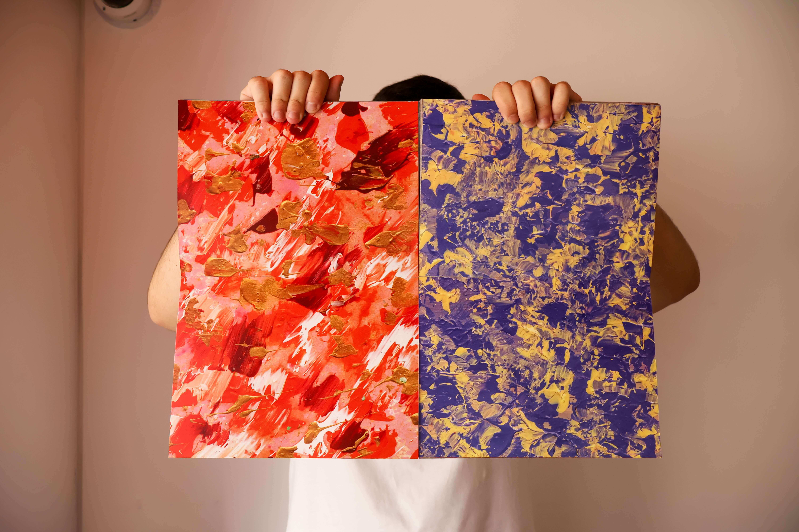
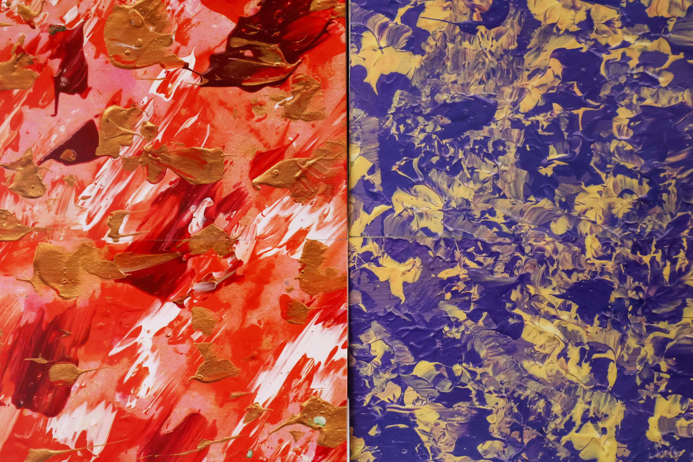

PAINTING TO NOT LOSE MY SOUL
"Painting to not lose my soul" emerged within an academic briefing focused on the concept of a leave behind, carrying with it a genuinely personal and reflective sentiment. As an exercise in self-awareness, it explores other areas that inform my graphic design practice, particularly painting. With the intensity of academic work, painting, a hobby I have practiced for as long as I can remember, has been occupying less and less of my time. However, "Painting to not lose my soul" allowed me to rediscover my appreciation for the free exploration of forms, colors, and compositions. More than a technical exercise, it represents, for me, a process of rediscovery and a reconnection with an essential creative practice within my journey as a graphic designer.
2026
ACADEMIC PROJECT
EDITORIAL DESIGN






